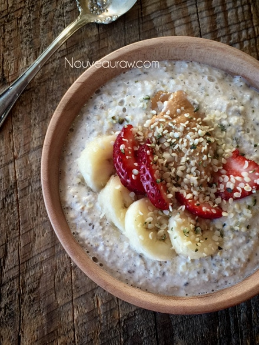

Cookie Dough Oat Porridge

– RAW / VEGAN / GLUTEN-FREE –
Well, this was sort of like the Last Supper…alas it is Mom’s last breakfast here at the Nouveau Raw Inn. Soon she will be back home in Alaska, and I miss her already.
This is a very rich porridge, so rich in fact that Mom wasn’t able to eat it all in one sitting, unlike the other ones that I have made for her over the past week.
I love the fact that it has nutritional yeast in it, I am a huge fan of the stuff, and it gives this porridge a very unique flavor. Cookie Dough Oat Porridge almost seems like a dessert! You could always use different nut butters if you wanted to. Enjoy your morning!
Ingredients:
- 1/2 cup raw, gluten-free oats
- 1 cup nut milk (divided into 1/2 cup measurements)
- 1 Tbsp chia seeds
- 1 Tbsp nutritional yeast ( I love the Gold Star brand )
- 1 Tbsp raw peanut butter
- 2 Tbsp chocolate chips
- 1 packet stevia or a sweetener of your choice
- 1 tsp vanilla
- pinch Himalayan pink salt
- pinch ground Ceylon cinnamon
Preparation:
- Blend 1/2 cup of the nut milk with the oats and chia seeds & refrigerate overnight or for at least 1 hour to thicken.
- If you make it the night before, go ahead and just keep it in the blender container to cut down on dishes.
- Come morning take the blender and add the remaining 1/2 cup milk, stevia, vanilla, salt, and cinnamon. Blend on high.
- Turn blender speed to low and add nutritional yeast and 1 Tbsp chocolate chips.
- You don’t want the chocolate chips to get completely obliterated.
- Top with remaining chocolate and peanut butter. I sprinkled a few extra oats on top as well.

© AmieSue.com